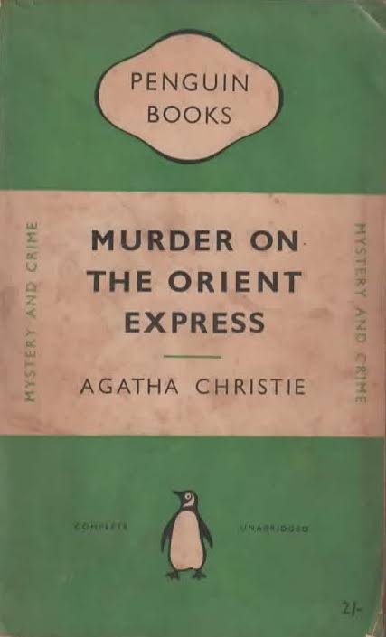

רצח באוריינט אקספרס
מחברת: אגתה כריסטי
שנת פרסום מקורית: 1934
קטגוריה: מתח ומסתורין
תקציר הספר
רצח מתרחש ברכבת מפוארת שנעצרה בשלג. הבלש הרקול פוארו בוחן את הנוסעים ואת העדויות, ומגלה שבין הסיפורים שלהם מסתתרות סתירות שמובילות לפתרון מפתיע.
חזרה לקטלוג הספרים